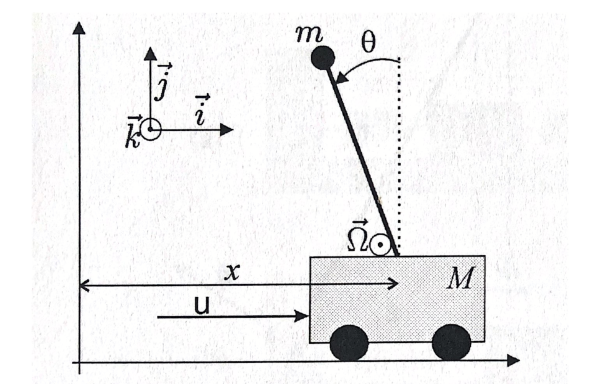

倒立摆是自动控制中一个经典的非线性系统，它的运动方程如下:
$\left(\begin{array}{l} \dot{x}_{1} \\ \dot{x}_{2} \\ \dot{x}_{3} \\ \dot{x}_{4} \end{array}\right)=\left(\begin{array}{c} x_{3} \\ x_{4} \\ \frac{m \sin x_{2}\left(g \cos x_{2}-\ell x_{4}^{2}\right)+u}{M+m \sin ^{2} x_{2}} \\ \frac{\sin x_{2}\left((M+m) g-m \ell x_{4}^{2} \cos x_{2}\right)+\cos x_{2} u}{\ell\left(M+m \sin ^{2} x_{2}\right)} \end{array}\right)$ 在这里 $\mathbf{x}=\left(\begin{array}{l} x \\ \theta \\ \dot{ x} \\ \dot{\theta } \end{array}\right)$ m=杆顶小球的质量， M=小车质量， g=重力加速度， l=杆长，u=水平方向力
倒立摆的初始位置为垂直向下，只用一种控制方法将杆垂直向上稳定住是极其困难的，因此一般分为两个阶段：起杆和稳杆。每个阶段采用 不同的控制方法。 起杆阶段此处用了能量反馈法, 从模拟中可以看出，仅一次摆动就可以成功起杆。当杆到达垂直向上的状态时，角速度接近于0，此时进入稳杆阶段，此处转向状态反馈 控制方法。
能量的计算公式为：
$E=m g l\left(\frac{1}{2}\left(\frac{\dot{\theta}}{\omega_{0}}\right)^{2}+\cos \theta-1\right)$ 假设摆杆垂直向上时能量为0
反馈公式为$u=\operatorname{sat}_{n g}\left(k\left(E-E_{0}\right)\right) \operatorname{sign}(\dot{\theta} \cos \theta)$
通过公式可以看出，能量反馈法起摆，只需要$\theta$和$\dot{\theta}$可观测。由于两个阶段的控制方法有一个交接的过程，所以需要全部的 状态值可观测以便交接，否则很容易交接失败。
杆垂直向上是一个功能点（$\dot{\mathbf{x}}=0$），因此可以用线性近似，公式如下：
$\dot{\mathbf{x}}=\left(\begin{array}{cccc} 0 & 0 & 1 & 0 \\ 0 & 0 & 0 & 1 \\ 0 & \frac{m g}{M} & 0 & 0 \\ 0 & \frac{(M+m) g}{M \ell} & 0 & 0 \end{array}\right) \mathbf{x}+\left(\begin{array}{c} 0 \\ 0 \\ \frac{1}{M} \\ \frac{1}{M \ell} \end{array}\right) u$
状态反馈极值安置法是现代控制理论，鲁棒性很强，此时我们只需要$x$这一个值可观测，就能通过线性近似公式模拟一个全状态观测器（regulatorKLH）， 将其稳定在任何我们想要的地方。从图中我们看出，改变控制命令（Commande_w），倒立摆随之改变稳定位置。
仿真语言：Julia
绘图库：Makie
2020-8-27